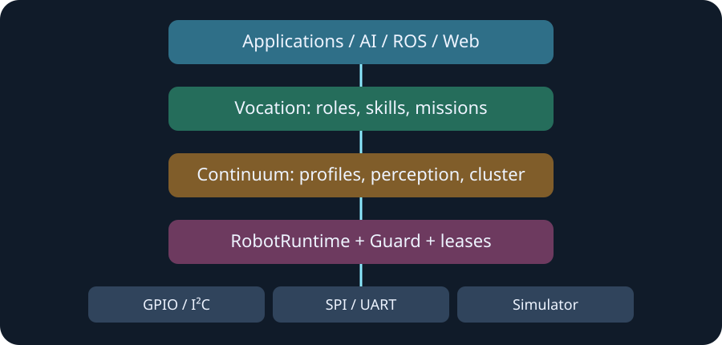

Safety first
Vocation and Continuum never bypass RobotRuntime authority, actuator leases, preflight, or Rivet Guard. The simulator exercises the same seams used by future drivers.
How Rivet stays composable
Higher-level capability describes intent and competence; RobotRuntime, leases, preflight, and Rivet Guard remain the command authority.

Vocation and Continuum never bypass RobotRuntime authority, actuator leases, preflight, or Rivet Guard. The simulator exercises the same seams used by future drivers.
GPIO, camera, serial, vision, fleet transport, process isolation, and hardware-backed identity remain opt-in integration boundaries rather than hidden runtime assumptions.